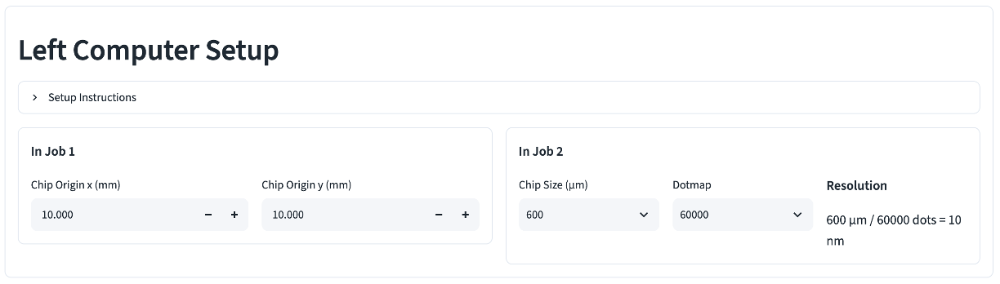
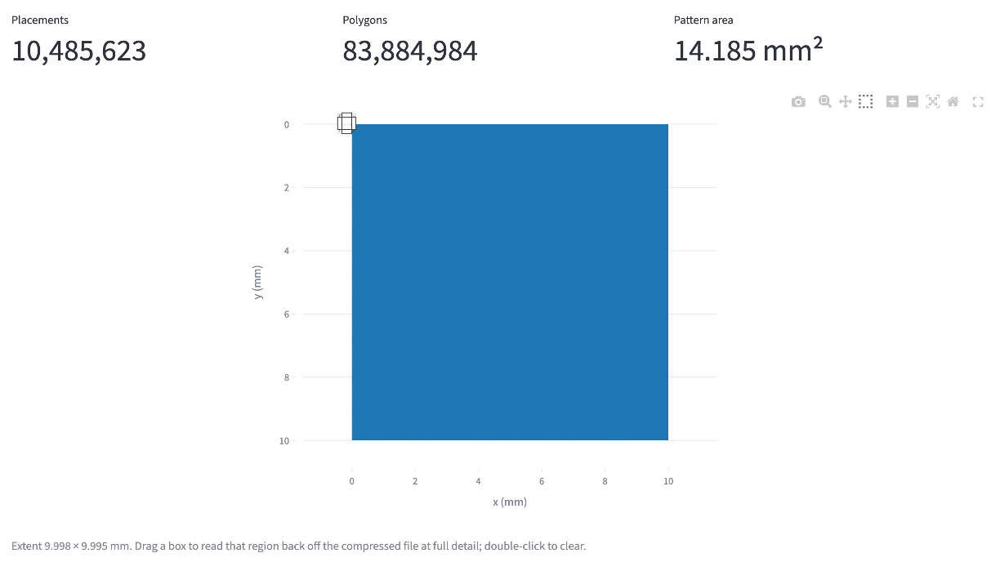
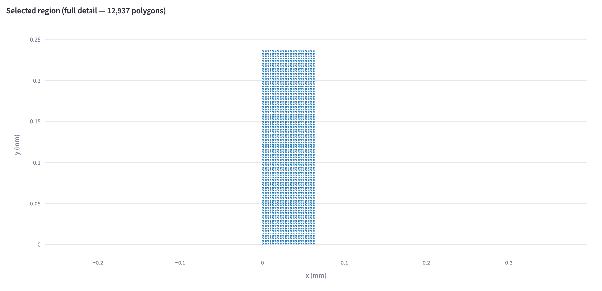
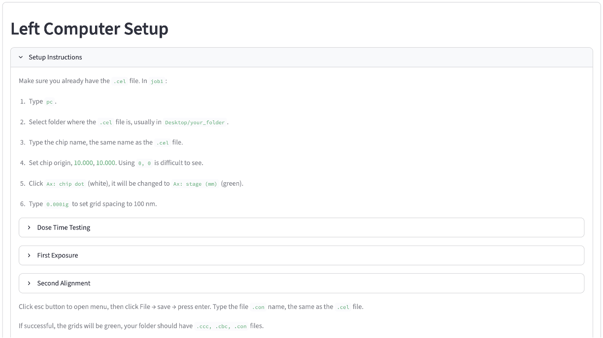

EBL calculator basics¶
Compute JEOL ELS-7000 chip positions and exposure jobs from a GDS mask. This page covers opening the tool, loading a mask, and reading the viewer, the three workflow pages that follow (dose test, first exposure, second exposure) each build on what's here.
1. Open the calculator¶
In most cases, the streamlit online web app is sufficient to process the mask files. If your mask file is larger than 350 MB, run the app locally:
-
Install python on your computer. On Windows, tick "add to PATH" during install.
-
Go to the e-beam tools or HBT tools Github repo, click the green "<> Code" button, then "download zip". Extract the zip to a folder.
-
Open a terminal or command prompt at the folder, and run
python launch_ebl_calculator.pyorpython3 launch_ebl_calculator.py. It installs what the page needs and launches the app in a browser.

2. Left Computer Setup¶
Set the chip origin — where the grids will be positioned (default 10.0, 10.0). You can use other numbers, but not 0, 0; that puts the grid at the far left of the screen, where you cannot find it.
Then set the Chip Size and Dotmap. Chip size is how big each grid will be; dot map is how many dots (pixels) will be drawn on each grid. So the exposure resolution is chip size divided by dot map.

3. Upload a mask¶
Drop a .gds file on Upload .gds file, under GDS Mask. Once a file parses, Top Cell and Layer to expose fill in. Pick the top-level cell, then the (layer, datatype) pair you want to look at or expose next.

4. Read the viewer¶
The plot below the selectors draws the selected layer. Small layers (under 50,000 polygons) draw every polygon:

Past 50,000 polygons the viewer shows a low-resolution overview instead of individual shapes. Drag a box on it to re-draw that region at full detail — useful for checking one device in a mask with thousands.


Three ways to use this page¶
Once a mask is loaded, the Workflow section at the bottom picks what the rest of the page does with it:

Dose Time Testing exposes a mask pattern several times, ramping the dose from tile to tile, so you can pick a working dose off the developed result before committing a real device. See dose test.
First Exposure exposes a mask file to a device without any mark alignment. You need to test the dose beforehand. See first exposure.
Second Alignment exposes a mask file to a device with an existing mark for alignment. You need to test the dose beforehand. See second exposure.
For the numbers to type into the JEOL system for all three, in order, see the job number sheet.
Setup Instruction¶
Tip: Open Setup Instruction in Left Computer Setup section. It summarizes your steps and the numbers required in the left-side computer.
